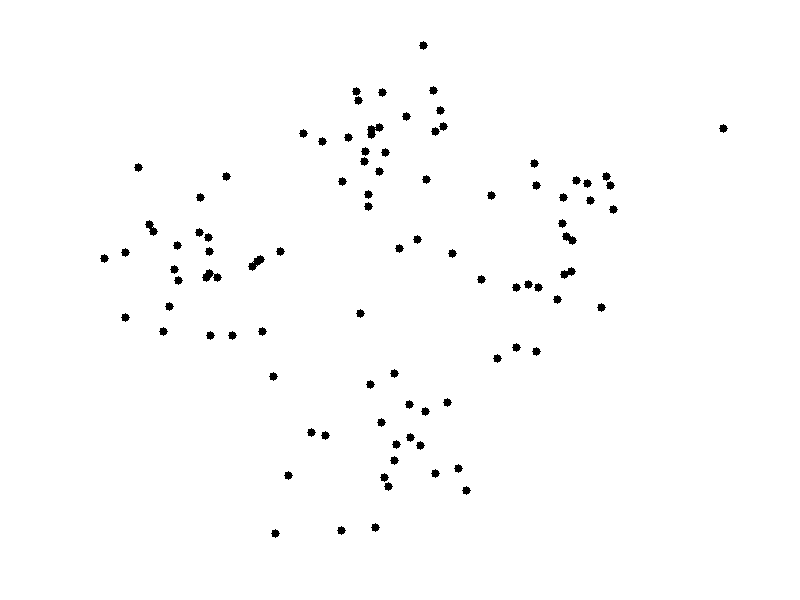
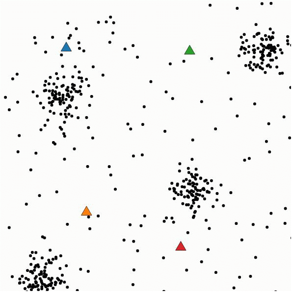
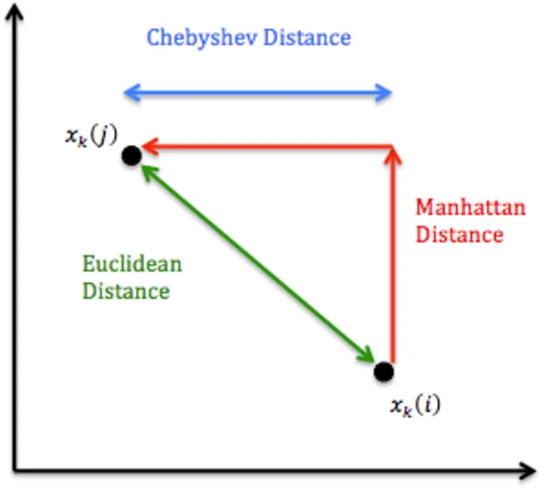
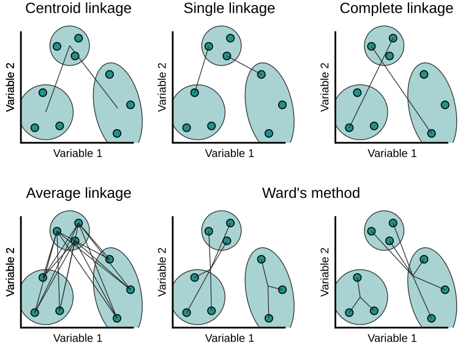
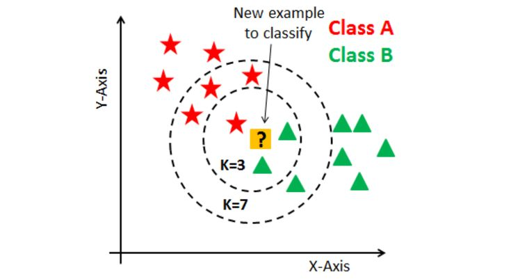

Представьтесь
Предварительные замечания
Кластерный анализ — это группа методов, позволяющих разделить объекты на однородные группы (кластеры) на основе их сходства по набору переменных.
В этом тьюториале рассматриваются три классических подхода: k-means, иерархический кластерный анализ и метод k-ближайших соседей (k-nearest neighbors, kNN), применяемых для решения практических задач.
Задачи кластеризации в социальных исследованиях
В прикладных социальных исследованиях кластерный анализ часто используется для содержательной сегментации респондентов, когда исследователя интересуют не столько отдельные переменные, сколько устойчивые сочетания установок и практик, образующие качественно различающиеся типы.
Так, в случае изучения стилей жизни и потребительского поведения исследователь может исходить из ряда вопросов о ценностях, досуге, потребительских стратегиях и поведения в сфере медиа. Применяя методы кластеризации, можно выделить группы респондентов с различными профилями ответов. Тогда кластеры интерпретируются как «традиционалисты», ориентирующиеся на семейные ценности и умеренное потребление, «карьеристы», для которых центральными оказываются профессиональный успех и индивидуальные достижения, «ориентированные на семью» респонденты с высокой значимостью родительства и домашнего досуга и другие типы, задаваемые эмпирически. Важно, что в этом подходе типология возникает не «по замыслу автора», а как результат структурных закономерностей в данных, после чего исследователь уже соотносит полученные кластеры с теоретическими моделями и контекстом исследования.
Аналогичная логика может быть применена для анализа территориальной дифференциации. Имея набор индикаторов социально‑экономического благополучия, инфраструктурной обеспеченности, уровня гражданской активности и доверия к институтам, исследователь может рассматривать не отдельные показатели, а их совместные конфигурации на уровне регионов, муниципалитетов или районов. Кластерный анализ в этом случае позволяет выделить группы территорий, схожие по профилю: условно «развитые центры» с высоким уровнем услуг и активным третьим сектором, «стабильная периферия» с умеренными значениями по большинству индикаторов и «уязвимые территории» с дефицитами как в инфраструктуре, так и в гражданском участии. Полученные кластеры могут использоваться для таргетирования государственной или муниципальной политики, сравнения динамики групп во времени, а также для более точной постановки исследовательских вопросов о факторах территориального неравенства.
Еще один пример: разработка типологии организаций – некоммерческих организаций, школ, медицинских учреждений, учреждений социальной сферы и т. д. В этом случае кластерный анализ может быть проведен по совокупности переменных: ресурсная база, структура персонала и добровольцев, набор услуг, целевые группы, модели взаимодействия с государством и бизнесом. Кластеризация позволяет выделять, например, «ресурсно обеспеченные профессиональные НКО» с устойчивым финансированием и развитой инфраструктурой, «локальные инициативные группы» с ограниченными ресурсами, но высоким уровнем вовлеченности волонтеров, или «гибридные организации», совмещающие черты классической НКО и социального предпринимательства. Такая типология не только упорядочивает эмпирическое разнообразие, но и служит основой для дальнейшего анализа: сравнения устойчивости различных типов, их роли в локальных сетях, реакций на институциональные изменения и т.д.
Таким образом, имея в своем арсенале методы кластерного анализа, у исследователя появляется возможность значительно расширить рамки своего проекта, и разработать аналитические решения, которые могут помочь сделать управленческие решения (в бизнесе, государственном управлении и некоммерческом секторе) более адресными, а, значит, более эффективными.
Тестовые вопросы
Вопрос 1
Какова основная цель методов кластерного анализа?
Вопрос 2
Что необходимо задать заранее в классическом алгоритме k-means?
Вопрос 3
Как обычно интерпретируется центр кластера в k-means?
Вопрос 4
Какой недостаток k-means делает важной предварительную стандартизацию переменных?
Вопрос 5
Что представляет собой дендрограмма в иерархическом кластерном анализе?
Вопрос 6
К какому типу относится метод k-nearest neighbors (kNN)?
Вопрос 7
Как определяется класс нового наблюдения в kNN?
Вопрос 8
Какой из подходов НЕ относится к иерархической кластеризации?
Вопрос 9
Почему важно интерпретировать кластеры с использованием исходных переменных?
Вопрос 10
Какой вывод можно сделать, если в дендрограмме большие «скачки» расстояний происходят при объединении последних нескольких кластеров?
Вопрос 11
Каково ключевое отличие k-means от kNN?
Вопрос 12
Какой шаг НЕЛЬЗЯ пропускать при работе с расстояниями между переменными разного масштаба?
Вопрос 13
Какая из следующих формулировок лучше всего описывает различие между мерой расстояния и мерой сходства?
Вопрос 14
Чем евклидово расстояние принципиально отличается от манхэттенского (city-block) при кластеризации?
Вопрос 15
Как влияет сильная корреляция между признаками на кластеризацию с использованием евклидова расстояния?
Вопрос 16
Чем отличаются методы single linkage и
complete linkage в иерархической кластеризации?
Вопрос 17
В чем ключевая идея метода Уорда (Ward) в агломеративной кластеризации?
Вопрос 18
Что измеряет силуэтная мера (silhouette) для отдельного объекта?
Вопрос 19
Как интерпретировать среднее значение силуэтной меры, близкое к 1?
Вопрос 20
Как можно использовать силуэтную меру для выбора числа кластеров \(k\) в алгоритме k-means?
Упражнения; Алгоритм k-means
Алгоритм \(k\)-means решает задачу разбиения \(n\) объектов на \(k\) кластеров так, чтобы минимизировать сумму квадратов расстояний объектов до центров кластеров.
Целевая функция
Пусть у нас есть какое-то количество объектов \(x_n\), которые описываются некоторым
количеством характеристик \(p\),значимых для будущей типологии.
Математически это можно записать так: \(x_1,\dots,x_n \in \mathbb{R}^p\), а число
кластеров – \(k\).
Обозначим центр кластера \(j\) как
\(\mu_j\), а множество объектов в
кластере как \(j\) — \(C_j\).
При применении метода k-means (k средних), максимизируется функция: \[ J = \sum_{j=1}^k \sum_{x_i \in C_j} \|x_i - \mu_j\|_2^2. \]
То есть, простыми словами, мы ищем такое разбиение респондентов или организаций на \(k\) групп и такие центры этих групп, при которых объекты внутри своих кластеров в среднем находятся как можно ближе к центру своего кластера.
Еще более по‑социологическ: допустим мы создаем типологию пользователей социального сервиса на основе анализа результатов опроса. Тогда:
каждый респондент представлен набором количественных признаков (возраст, доход, расходы по категориям и т.п.);
алгоритм подбирает типологию (кластеры) так, чтобы «средний респондент» внутри каждого типа был как можно более «похож» на остальных в своем типе, а разброс внутри типов должен быть как можно меньшим.
Разберем процесс по шагам:
Шаг 1. Инициализация
Выбираются начальные центры кластеров \(\mu_1^{(0)},\dots,\mu_k^{(0)}\) (обычно случайно из набора наблюдений).
Шаг 2. Присвоение объектов кластерам
Для каждого объекта \(x_i\) находится ближайший центр и объект присваивается соответствующему кластеру: \[ c_i^{(t)} = \arg\min_{j \in \{1,\dots,k\}} \|x_i - \mu_j^{(t)}\|^2. \]
Шаг 3. Пересчет центров кластеров (update)
Для каждого кластера \(j\) новый центр вычисляется как среднее всех объектов, отнесенных к данному кластеру: \[ \mu_j^{(t+1)} = \frac{1}{|C_j^{(t)}|} \sum_{x_i \in C_j^{(t)}} x_i. \]
Шаг 4. Критерий остановки
Шаги 2–3 повторяются, пока не выполнится одно из условий остановки:
- присвоения \(c_i\) не перестанут меняться;
- изменение центров \(\mu_j^{(t)}\) или значения \(J\) не станет меньше заданного порога;
- не будет достигнуто максимальное число итераций.
Результат: разбиение на \(k\) кластеров и центры \(\mu_1,\dots,\mu_k\), которые локально минимизируют \(J\).
Вот как это может выглядеть:


Разберем пример с набором данных Wholesale customers.
Этот датасет описывает клиентов оптового дистрибьютора (Португалия) и
содежит следующие переменные:
Channel— тип клиента: 1 = Horeca (отели, рестораны, кафе), 2 = Retail (розница).Region— регион: 1 = Lisbon, 2 = Oporto, 3 = Other.Fresh— годовые траты на свежие продукты.Milk— траты на молочную продукцию.Grocery— бакалея (сухие и долгохранящиеся продукты).Frozen— замороженные продуктыDetergent— моющие средства.Delicatessen— деликатесы.
Всего 440 клиентов, 8 переменных, пропусков нет.
Используем числовые переменные набора wholesale (траты
по товарным категориям) и их стандартизованные версии
wh_scaled.
Упражнение 1 — Просмотр и базовая статистика
Посмотрите на первые строки числовых данных wh_num и на
основные статистики по переменным summary().
# выведите первые строки wh_num
# и сводные статистики с помощью summary()Упражнение 2 — Запуск k-means с k = 4
Выполните кластеризацию k-means на стандартизованных данных
wh_scaled с помощью метода kmeans() с числом
кластеров centers = 4 и nstart = 25.
Сохраните результат в объект km_wh4.
# ваш кодУпражнение 3 — Размеры и центры кластеров
- Посмотрите на количество наблюдений в каждом кластере
(
km_wh4$size).
- Выведите матрицу центров кластеров
(
km_wh4$centers).
# ваш кодУпражнение 4 — Визуализация кластеров
Постройте визуализацию кластеров, используя функцию
fviz_cluster() из пакета factoextra, с данными
wh_scaled и результатом km_wh4.
# ваш кодНа графике мы видим, что в первом кластере у нас только один клиент с особыми потребностями, чьи значения далеко отстоят от других клиентов. Он тратит аномально много по всем категориям (особенно на деликатесы, заморозку, молочные и свежие продукты) даже относительно других оптовых покупателей. По сути это один «сверхтяжелый» клиент, который настолько выбивается по объемам закупок, что k-means выделяет его в отдельный кластер, чтобы не портить структуру остальных. Он настолько специфичен, что его стоит выделить в отдельный кейс, анализировать отдельно, поскольку стастически - это определенно «выброс».
Во втором кластере центральные значения все слегка отрицательные. Интерпретация: это клиенты с объемом закупок ниже среднего по всем категориям — небольшие/редко покупающие клиенты без выраженной специализации.
В третьем кластере по центральным значениям Milk ≈ 1.85, Grocery ≈ 2.22, Detergent ≈ 2.25 (сильно выше среднего), Frozen слегка ниже 0, Fresh немного ниже 0. Интерпретация: клиенты, делающие крупные закупки в «сухих» категориях — молочные продукты, бакалея, моющие средства, но не особенно выделяющиеся по свежим продуктам и заморозке. Типично похоже на розничные магазины/супермаркеты.
- У четвертого кластера Fresh ≈ 1.6 и Frozen ≈ 1.0 (выше среднего), Milk и Grocery чуть ниже или около нуля, Detergent чуть ниже среднего, Delicatessen немного выше нуля. Это клиенты с повышенными закупками свежих и замороженных продуктов, менее акцентированные на бакалее и бытовой химии.
Упражнение 5 — Сравнение кластеров по типу клиента (Channel)
Сравните полученные кластеры с переменной Channel (1 =
Horeca, 2 = Retail):
- Постройте таблицу сопряженности
tab_km_channelмеждуkm_wh4$clusterиwholesale$Channel.
- Выведите на экран
tab_km_channelи проинтерпретируйте, какие кластеры ближе к Horeca, а какие — к розничной торговле.
# ваш кодУпражнения: иерархический кластерный анализ
Иерархический кластерный анализ строит дерево вложенных кластеров (дендрограмму), показывая, как объекты последовательно объединяются (агломеративный подход) или разделяются (дивизимный подход). В отличие от k-means, число кластеров заранее не фиксируется: его выбирают позже, «обрезая» дендрограмму на нужной высоте. Результаты иерархического кластерного анализа могут разниться и зависят от того, как определяются расстояния между объектами и какой метод выбран для определения границ кластера.
Расстояния между объектами
Пусть объекты описаны векторами признаков \(x_i = (x_{i1},\dots,x_{ip})\), \(x_l = (x_{l1},\dots,x_{lp})\). Наиболее распространенными являются следующие метрики:
- Евклидово расстояние \[ d_{\text{E}}(x_i,x_l) = \sqrt{\sum_{m=1}^p (x_{im} - x_{lm})^2}. \]
Где: - \(x_i =
(x_{i1},\dots,x_{ip})\) — вектор признаков для объекта
номер \(i\);
- \(x_l = (x_{l1},\dots,x_{lp})\) —
вектор признаков для объекта номер \(l\);
- индекс \(m\) в сумме — номер признака
(переменной) от 1 до \(p\).
То есть для двух объектов (респондентов, организаций и пр.) по каждому признаку \(m\) считается разность, возводится в квадрат, считается сумма и далее извлекается корень. Индексы нужны лишь для того, чтобы явно различать «номер объекта» и «номер признака».
Данная метрика хорошо работает, когда признаки сравнимы по масштабу (часто после стандартизации), чувствительно к выбросам и сильным различиям по отдельным координатам.
Манхеттенское (city-block) расстояние \[ d_{\text{M}}(x_i,x_l) = \sum_{m=1}^p |x_{im} - x_{lm}|. \] Менее чувствительно к крупным отклонениям одной переменной, удобно, когда различия по признакам складываются аддитивно (суммарная «разница по всем шкалам»).
Расстояние Чебышева \[ d_{\text{Ch}}(x_i,x_l) = \max_{1 \le m \le p} |x_{im} - x_{lm}|. \]
Ориентируется на максимальное различие по одной координате, полезно, когда важно учитывать «наибольшую разницу» между объектами (например, если один критический показатель доминирует в оценке близости).

Другие расстояния
Помимо евклидова, манхеттенского и расстояния Чебышева, в кластерном анализе часто используют несколько других типов расстояний и мер «несходства».
Квадрат евклидова расстояния
Иногда вместо евклидова расстояния используют его квадрат без извлечения корня:
\(d_{\text{E2}}(x,y) = \sum_{m=1}^p (x_m - y_m)^2.\)
В этом случае, крупные отличия по отдельным признакам получают еще больший вес; удобно в алгоритмах, которые прямо работают с суммой квадратов (метод Уорда, k-means).
Косинусное расстояние
Сначала определяют косинусное сходство между объектами:
\(\cos(x,y) = \dfrac{\sum_{m=1}^p x_m y_m}{\lVert x \rVert \,\lVert y \rVert},\)
где \(\lVert x \rVert\) — длина вектора \(x\). Тогда косинусное расстояние можно задать как
\(d_{\text{cos}}(x,y) = 1 - \cos(x,y).\)
Важно, когда интересует форма профиля признаков, а не абсолютный масштаб (направление вектора, а не его длина).
Расстояния для бинарных (0–1) признаков
Если признаки представлены как «есть/нет» (0–1), используют меры, основанные на совпадениях/расхождениях. Пусть для двух объектов:
- \(a\) — число признаков, где оба равны 1;
- \(b\) — число признаков, где первый = 1, второй = 0;
- \(c\) — число признаков, где первый = 0, второй = 1;
- \(d\) — число признаков, где оба равны 0.
Мера Жаккара (Jaccard)
Сходство:
\(s_{\text{J}} = \dfrac{a}{a + b + c}.\)
Расстояние:
\(d_{\text{J}} = 1 - s_{\text{J}} = \dfrac{b + c}{a + b + c}.\)
Игнорирует совпадения «0–0», акцентирует совместные «единицы».
Sokal–Michener
Сходство:
\(s_{\text{SM}} = \dfrac{a + d}{a + b + c + d},\)
расстояние:
\(d_{\text{SM}} = 1 - s_{\text{SM}}.\)
Учитывает и совпадения «1–1», и совпадения «0–0».
Расстояние Гауэра для смешанных данных
При совместном анализе количественных, порядковых и бинарных переменных используют расстояние Гауэра. Для каждого признака \(m\) считается частичное несходство \(d_m(x,y)\) (нормированное от 0 до 1), затем берется среднее:
\(d_{\text{Gower}}(x,y) = \dfrac{\sum_{m=1}^p w_m d_m(x,y)}{\sum_{m=1}^p w_m},\)
где \(w_m\) — вес (обычно 1 при отсутствии пропуска и 0 при пропуске).
Примеры частичных расстояний:
- для количественных признаков:
\(d_m(x,y) = \dfrac{|x_m - y_m|}{R_m},\)
где \(R_m\) — диапазон (max − min) по признаку \(m\); - для бинарных и номинальных: \(d_m(x,y) = 0\) при совпадении и \(1\) при различии;
- для порядковых: сначала перевод в \([0;1]\), затем как количественный.
Шпаргалка по выбору мер сходства/близости
- Только количественные признаки: семейство \(L_p\) (манхеттен, евклидово, квадрат
евклидова) — после стандартизации.
- Бинарные признаки: Жаккар (если важны «единицы»), Sokal–Michener
(если важны и «0», и «1»).
- Смешанные данные: расстояние Гауэра, позволяющее совместно учитывать разные типы шкал.
На практике в иерархическом анализе чаще всего используют евклидово или манхеттенское расстояние; выбор метрики должен соответствовать смыслу признаков и способу, которым исследователь определяет «похожесть».
Агломеративные и дивизимные алгоритмы
- Агломеративный иерархический анализ (bottom-up)
- старт: каждый объект образует отдельный кластер;
- на каждом шаге находятся два наиболее близких
кластера и объединяются в новый;
- процесс продолжается до тех пор, пока не останется один кластер, содержащий все объекты.
- старт: каждый объект образует отдельный кластер;
- Дивизимный иерархический анализ (top-down)
- старт: все объекты в одном кластере;
- на каждом шаге один кластер разбивается на два более мелких (по
некоторому критерию ухудшения/улучшения качества);
- процесс продолжается, пока не будут получены отдельные объекты или не выполнен критерий остановки.
- старт: все объекты в одном кластере;
В прикладной практике и в стандартных реализациях в R чаще используется именно агломеративный вариант.
Модели объединения кластеров (linkage)
При агломеративном анализе необходимо определить, как считать расстояние между кластерами \(A\) и \(B\), если известно расстояние между отдельными объектами этих кластеров.
Пусть \(d(x_i,x_l)\) — расстояние между объектами. Тогда:
Метод одиночной связи (single linkage)
\[ D_{\text{single}}(A,B) = \min_{x_i \in A,\; x_l \in B} d(x_i,x_l). \] Ориентируется на наиболее близкую пару объектов. Стремится цеплять кластеры «по цепочке», может приводить к эффекту «цепей» (один длинный вытянутый кластер).Метод полной связи (complete linkage) \[ D_{\text{complete}}(A,B) = \max_{x_i \in A,\; x_l \in B} d(x_i,x_l). \]
Ориентируется на наиболее далекую пару объектов. Стремится формировать более компактные и плотные кластеры, но может разделять «естественные» группы, если внутри них есть удаленные точки.
- Метод средней связи (average linkage) \[ D_{\text{average}}(A,B) = \frac{1}{|A|\;|B|} \sum_{x_i \in A} \sum_{x_l \in B} d(x_i,x_l). \]
Берет среднее расстояние между всеми парами объектов в кластерах. Компромисс между одиночной и полной связью, менее чувствителен к выбросам внутри кластеров.
- Метод Уорда (Ward)
В классической формулировке метод Уорда выбирает для объединения те кластеры, при которых минимально увеличивается внутрикластерная сумма квадратов. Если обозначить центры кластеров как \(\mu_A\), \(\mu_B\), а их размеры как \(n_A\), \(n_B\), то критерий роста суммарной инерции при объединении можно записать как \[ \Delta(A,B) = \frac{n_A n_B}{n_A + n_B}\,\lVert \mu_A - \mu_B \rVert_2^2. \] На каждом шаге объединяются кластеры с минимальным \(\Delta(A,B)\). По смыслу это близко к идее k-means: минимизация разброса внутри кластеров.

Главная идея: иерархический анализ не только дает разбиение на кластеры, но и показывает иерархию объединений, что удобно для интерпретации типологий в социальных и маркетинговых исследованиях.
Попробуем провести иерархический кластерный анализ на данных по оптовым закупкам.
Упражнение 6 — Матрица расстояний
Постройте евклидову матрицу расстояний для стандартизованных данных
wh_scaled и сохраните ее в объект dist_wh.
Функция для подсчета расстояний - dist(),
method="euclidean". Выведите матрицу расстояний на
экран.
# ваш кодУпражнение 7 — Агломеративная кластеризация (метод Уорда)
Выполните иерархическую агломеративную кластеризацию на
dist_wh с помощью hclust() и методом
ward.D2.
Сохраните результат в объект hc_wh.
# ваш кодУпражнение 8 — Дендрограмма
Постройте дендрограмму для объекта hc_wh.
Используйте функцию plot(). Уберите подписи клиентов
(labels = FALSE), чтобы график был более читаемым. Сделайте
название с помощью параметра main=" ", добавьте подписи
осей через xlab и `ylab’.
# ваш кодУпражнение 9 — Обрезка дендрограммы и размеры кластеров
- Обрежьте дендрограмму на 4 кластера (
k = 4) с помощьюcutree()и сохраните результат вhc_clusters4.
- Посчитайте, сколько клиентов попало в каждый кластер с помощью
функции
table().
# ваш кодУпражнение 10 — Визуализация кластеров и интерпретация
- Постройте визуализацию кластеров с помощью функции
fviz_cluster(), используя список с данными и метками кластеров:
fviz_cluster(list(data = wh_scaled, cluster = hc_clusters4)).
- Сравните полученные кластеры с переменной
wholesale$Channel(Horeca vs Retail), построив таблицу сопряженностиtab_hc_channel.
# ваш кодУпражнения: метод k-ближайших соседей (kNN)
Метод k-ближайших соседей — это простой метрический алгоритм с учителем: для нового объекта класс определяется по классам его ближайших соседей в обучающей выборке. Предполагается, что объекты с похожими признаками должны иметь одинаковую или близкую метку класса.

Основная идея
Имеется обучающая выборка \((x_i, y_i)\), \(i = 1,\dots,n\), где:
- \(x_i = (x_{i1},\dots,x_{ip})\) — вектор признаков объекта \(i\);
- \(y_i\) — известный класс (например, тип клиента: Horeca или Retail).
Пусть \(x\) — новый объект, для которого нужно предсказать класс.
- Выбираем число соседей \(k\) и метрику расстояния \(d(x, x_i)\) (обычно евклидово или манхеттенское расстояние).
- Вычисляем расстояния от \(x\) до всех обучающих объектов: \[ d_i = d(x, x_i), \quad i = 1,\dots,n. \]
- Находим индексы \(k\) ближайших соседей: \[ N_k(x) = \{i_1,\dots,i_k\}, \quad \text{таких что } d_{i_j} \text{ — } k \text{ наименьших расстояний.} \]
- Для классификации выбираем класс, который чаще всего встречается среди соседей: \[ \hat{y}(x) = \arg\max_{c} \sum_{i \in N_k(x)} \mathbf{1}(y_i = c), \] где \(\mathbf{1}(\cdot)\) — индикатор (1, если условие верно, и 0 иначе).
Таким образом, kNN не строит явной модели; он опирается на локальное «окружение» объекта в пространстве признаков.
Мы будем классифицировать клиентов оптового дистрибьютора по типу
Channel (Horeca vs Retail) на основе профиля расходов по
категориям.
Упражнение 11 — Размеры обучающей и тестовой выборок
Посчитайте, сколько наблюдений попало в обучение и сколько — в тест:
idx_train <- sample(1:n, size = round(0.7 * n))
train_x <- wh_scaled[idx_train, ]
train_y <- channel[idx_train]
test_x <- wh_scaled[-idx_train, ]
test_y <- channel[-idx_train]
# посмотрите, сколько попало в обучающую выборку через length(idx_train)
# посчитайте объем тестовой выборки n - length(idx_train)Упражнение 12 — kNN с k = 5
Выполните классификацию клиентов на тестовой выборке с помощью
функции knn():
- используйте настройки
train =train_x,train_y,test = test_x,cl = train_y; - задайте
k = 5; - сохраните предсказанные классы в объект
pred_knn5.
Упражнение 13 — Матрица ошибок и точность
- Постройте таблицу сопряженности между
pred_knn5иtest_y.
- Оцените долю верно классифицированных клиентов (accuracy):
```r
acc_knn5 <- sum(diag(tab_knn5)) / sum(tab_knn5)
acc_knn5
```Упражнение 14 — Влияние параметра k
Сравните точность классификации для нескольких значений k: 1, 3, 5, 9, 15.
ks <- c(1, 3, 5, 9, 15)
accs <- sapply(ks, function(k) {
pred <- knn(train = train_x, test = test_x, cl = train_y, k = k)
tab <- table(pred, test_y)
sum(diag(tab)) / sum(tab)
})
data.frame(k = ks, accuracy = accs)Упражнение 15 — Интерпретация признаков и расстояния
Сделаем график, визуализирующий разделение между каналами клиентов по исходным и предсказанным значениям.
# Сделаем PCA на стандартизированных данных
pca_wh <- prcomp(wh_scaled, scale. = FALSE) # так как данные уже стандартизированы, второй раз этого делать не нужно
# отберем координаты только тестовых наблюдений, потому что только по ним у нас есть предсказанные значения
scores <- as.data.frame(pca_wh$x[-idx_train, 1:2])
scores$true <- test_y # истинные классы на тесте
scores$pred <- pred_knn5 # предсказания kNN
library(ggplot2)
ggplot(scores, aes(x = PC1, y = PC2, color = true, shape = pred)) +
geom_point(alpha = 0.8) +
labs(
x = "PC1", y = "PC2",
color = "Channel (истинный)",
shape = "Channel (kNN)"
) +
theme_minimal()Сохранить ответы
- Нажмите на кнопку, чтобы загрузить файл, содержащий Ваши ответы, в формате HTML.
- Сохраните файл на компьютере, а потом загрузите его в качестве ответа на странице курса.
(Если файл не загружается, попробуйте сохранить его, нажав правую кнопку мыши и выбрав "Сохранить ссылку как...")